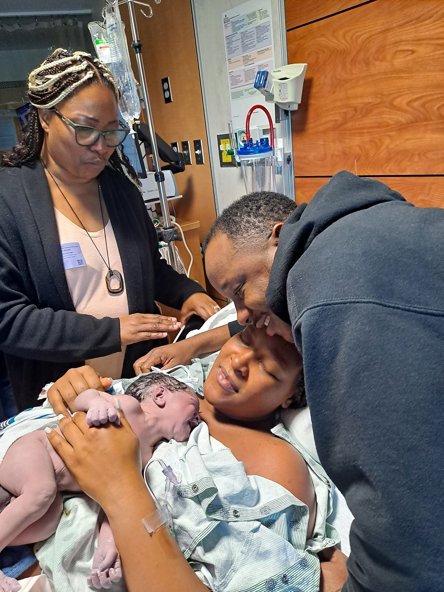
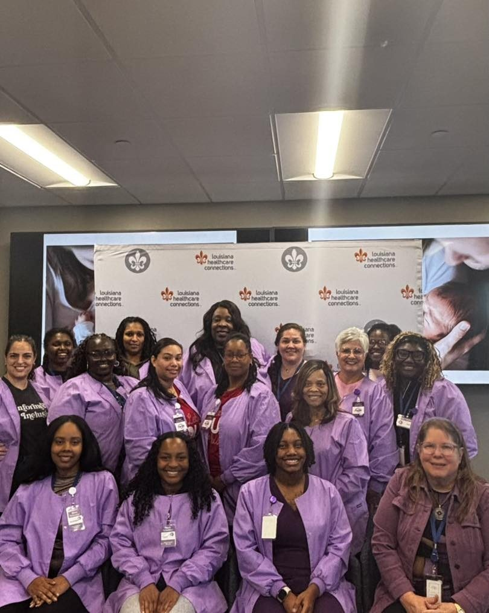
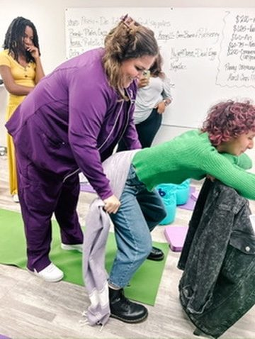
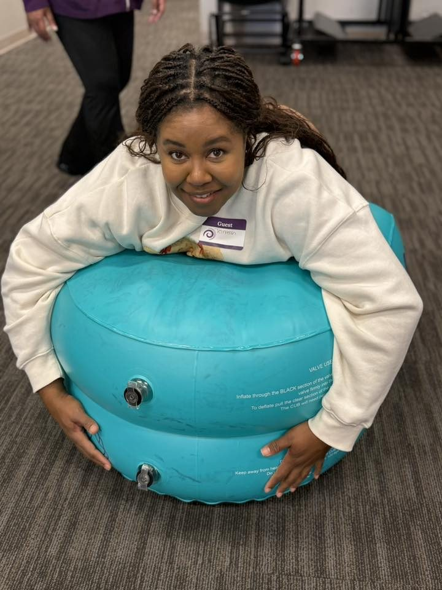

Cohorte Rho · 28–31 de julio, 2026 · Baton Rouge
Horario, matrícula, qué incluye, becas, requisitos de asistencia y la solicitud.
Capacitamos a la fuerza laboral de salud materna.
Capacitación de doula de parto acreditada por ICEA, además de especialidades en posparto, duelo y lactancia. Con raíces en Louisiana, disponible para aliados en todo el país.
capacitadas
atendidas
aprobado



Práctica activa, en cada cohorte.
Momentos reales de clase y práctica de medidas de confort de nuestras capacitaciones más recientes.




Cinco programas, una fuerza laboral.
Nuestra capacitación de doula de parto es el punto de entrada y la más solicitada. Más allá de ella, ofrecemos posparto, duelo, lactancia y currículo personalizado para organizaciones aliadas.
Capacitación de Doula de Parto
Una capacitación de doula de parto aprobada por ICEA. Formatos híbridos o totalmente presenciales, treinta y tres horas de contacto, currículo basado en evidencia desarrollado por la Instructora Aprobada por ICEA Madeline LeBlanc, ICCE, ICBD, RN, IBCLC.
- Fisiología del parto y medidas de confort
- Cuidado del recién nacido y salud mental posparto
- Alcance de la práctica, marco BRAIN, tamizaje de determinantes sociales de la salud
- Becas de la vía de voluntariado disponibles
- Disponible en español a solicitud para organizaciones aliadas
Capacitación de Doula de Posparto
Capacitación de especialidad para doulas que quieren apoyar a las familias durante las primeras semanas en casa. Cuidado del recién nacido, alimentación infantil, acompañamiento del sueño, salud mental de los padres y la madre en recuperación.
- Fisiología y recuperación posparto
- Alimentación infantil (pecho, biberón, ritmo)
- Fundamentos de apoyo a la lactancia
- Trastornos del estado de ánimo posparto y escalamiento
Especialidad de Doula de Duelo
Una capacitación de especialidad aprobada por ICEA para doulas, enfermeras y trabajadoras del parto que desean acompañar a las familias a través de la pérdida durante el embarazo y la pérdida infantil. Totalmente en línea, a tu propio ritmo, con seis meses de acceso y 16 CEU de ICEA.
- Cuidado informado por el trauma para la pérdida durante el embarazo y la pérdida infantil
- Libro de texto de tapa dura + cuaderno de reflexión incluidos
- En línea y a tu propio ritmo
Educación en Lactancia
Dos programas complementarios en desarrollo. Lactancia Básica para toda trabajadora del parto; Lactancia No-Tan-Básica para casos avanzados. Currículo diseñado por una IBCLC; las fechas de la primera cohorte se anunciarán pronto.
- Agarre, posición y la primera hora
- Desafíos comunes y cuándo derivar a una IBCLC
- Regreso al trabajo y casos complejos (avanzado)
Currículo Personalizado
Adaptamos nuestro currículo para hospitales, universidades y organizaciones aliadas sin fines de lucro, incluyendo la impartición en español. Entre los aliados anteriores se encuentran Our Lady of the Lake University y Franciscan Missionaries of Our Lady University.
- Programación de CEU para equipos de enfermería
- Currículo de doula en español
- Alianzas para el desarrollo de la fuerza laboral
- Impartición presencial o híbrida
Nos adaptamos a ti.
Solo para nuestra capacitación de doula de parto, ofrecemos tres formatos de horario. La de duelo es totalmente en línea y a tu propio ritmo; los programas de posparto y lactancia tienen su propia estructura.
Noches entre semana en línea más un solo sábado presencial. Ideal para aprendices con compromisos laborales entre semana que solo pueden viajar una vez.
Dos noches entre semana en línea más un fin de semana completo de práctica activa. Nuestro formato más solicitado, usado por la Cohorte Rho.
Tres días consecutivos para organizaciones y grupos que prefieren una impartición inmersiva y totalmente presencial. Se usa con frecuencia para contratos con aliados.
Obtén nuestros materiales de capacitación directamente.
Ya sea que te unas a una cohorte futura o capacites a tu propio equipo, los textos, mazos y guías de campo que usan nuestras aprendices están disponibles en nuestra tienda.
El mazo Pocket Doula, The Everything Guide, el paquete de Doula de Duelo, el libro de texto Data-Driven Doula y el curso completo de Duelo en línea.